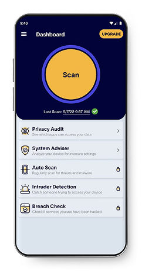

Is someone spying on your phone?
Find out with Certo
Think your phone has been hacked? Our trusted apps make it easy for you to scan, detect and remove threats from your iPhone and Android devices.

Does exactly what it says. Clear to read and understand. This is now the second iPhone we’ve used it on and would certainly recommend this app.
My son who works in IT suggested I try this app after I was getting lots of strange messages and things happening on my phone. Since running it once a week I have had no viruses or malware problems. I also got a VPN app so I think with both I’m all set!
Love the ease and efficiency. Awesome app. Very informative and insightful if wanting to know more about your device. The added breach check.is a great bonus. Check any email of they’ve ever been named in a data breach from years ago. Sweet tool. Love it highly recommend.
This app is good if you need to identify certain vulnerabilities on your iPhone. If you have any issues, their customer service was quite helpful and responsive.
I wish they had a VPN, I’d be signing up for that too. Apart from that the app is top notch. I had Certo on my last phone and it was the first app I put on this phone when I got it from the store. The scanner and other parts of the app are really easy and simple to use, even for a non-techie like me
With years of experience in mobile security and spyware detection, our products have helped countless people safeguard their devices and find peace of mind.
Our advanced spyware detection engine can identify if a device contains spyware or bugging software.
Find malicious keyboards installed on your device that could allow someone to record things you type (e.g. passwords).
Check which apps can access your location, microphone or camera. Get alerted if a known tracking app is installed.
Analyze your operating system for signs of tampering that could compromise security, such as Jailbreaking.
Our intelligent scan will either safely remove threats for you or provide easy-to-follow instructions.
We create easy to use apps that can check your device for vulnerabilities in a matter of minutes.
Find out with Certo